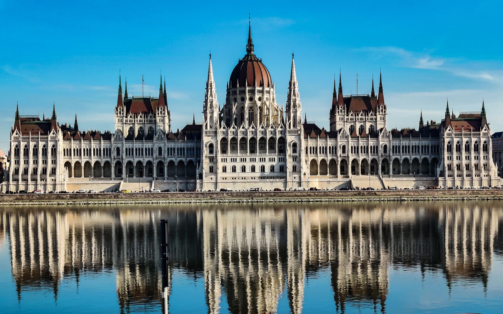

4 Kasım 1956: Budapeşte’de On İki Gün ve Kimsenin Gelmediği Gece
4 Kasım 1956, sabaha karşı saat 5.20. Budapeşte radyosu, yalnızca 35 saniye süren bir yayın yapıyor. Başbakan Imre Nagy, Sovyet birliklerinin başkente saldırdığını, hükûmetin yerinde olduğunu bildiriyor. Bu, Macar Devrimi’nin son büyük sahnesinin başlangıcı. On iki gün önce, 23 Ekim’de, öğrenciler sokağa çıkmış, bir devrim denemesi başlamıştı. Şimdi aynı şehirde Sovyet tankları sokaklardaydı. Bu yazı, o on iki günün hikâyesi: neden başladı, neden bu kadar hızlı bitti ve “dünya neden bakakaldı?” sorusunun cevabı.

Bu patlamanın arkasında ne vardı?
Her ayaklanma bir günde doğmaz ve Macaristan’da yıllardır biriken bir baskı vardı. Savaştan sonra ülkeyi Kızıl Ordu işgal etmişti ve Stalin’in desteğiyle komünist bir yönetim kurulmuştu. 1940’ların sonundan itibaren Mátyás Rákosi’nin yönetimi, ÁVH adlı gizli polis üzerinden çalışan bir korku düzenine dayanıyordu. Bir kaynak, 1950’lerin başında en az 7.000 parti görevlisinin tasfiye edildiğini ve 1950-1952 arasında binlerce yurttaşın zorla yerinden edildiğini aktarıyor. Ekonomi Sovyet çıkarlarına göre sömürülüyor, halk yoksullaşıyordu.
Zincirin halkaları sırayla gevşedi. Mart 1953’te Stalin öldü ve Imre Nagy kısa bir süre Rákosi’nin yerine başbakan oldu. Nagy’nin ekonomik ve toplumsal reformları halkta karşılık buldu, Sovyetler’de ise rahatsızlık yarattı. Rákosi onu 1955’te görevden aldırdı. Ardından, 25 Şubat 1956’da Kruşçev’in Stalin’i kınayan gizli konuşması geldi, metin New York Times’ta 5 Haziran’da tam olarak yayımlandı. Rákosi 18 Temmuz 1956’da görevden alındı ama yerine geçen Ernő Gerő da neredeyse onun kadar sevilmiyordu ve anlamlı bir taviz vermedi. Aynı yılın Haziran’ında Polonya’nın Poznań kentinde işçi ayaklanması bastırıldı, ama Ekim’de Polonya bazı reformları elde edince, Macarlar için bu bir cesaretlendirme oldu. 1955’te Avusturya’nın tarafsızlığını ilan etmesi de, komşusu Macaristan’da benzer bir statü umudunu besledi.
İmre Nagy: İstemeden devrimci
Hikâyenin merkezindeki isim ilginç bir figür. Nagy bir muhalif değil, komünist bir parti adamıydı. 1953’te Stalin’in ölümünden sonra başbakan olduğunda ekonomik ve toplumsal reformlar önerdi ve halk bunu sevdi. Rákosi onu 1955’te görevden aldırdı. Yani Ekim 1956’da Nagy’ı çağıran kalabalık, kendi liderini seçen bir muhalefet değil, daha önce bir reformu denemiş bir “kendi içinden” isme yaslanan bir halktı.
Bu detay, olayların seyrini anlamak için önemli. Nagy iktidara geldiğinde hem kendi partisinin, hem Moskova’nın, hem de sokağın baskısı altındaydı. Bir kaynak, halkın Sovyet ordusunun çekilmesini istediğini, Nagy’nin ise reformların devam edeceğini vaat ettiğini yazıyor. İki taraf farklı hızlarda hareket ediyordu. Sokak bir şeyi tümüyle değiştirmek istiyordu. Nagy ise önce bir komünist reformcu olarak başlamıştı ve olayların hızı onu 1 Kasım’da Varşova Paktı’ndan çıkmaya kadar itti. Bunu benim yorumum olarak ekliyorum: bir politikacının kendi başlangıç noktasından ne kadar uzağa sürüklenebileceğinin ilginç bir örneği.
16 talep: Bir öğrencinin kâğıdında ne yazıyordu?
Bu başlığı seviyorum çünkü bir devrimin ilk metni çoğu zaman en açık olanıdır. 22 Ekim’de öğrencilerin kabul ettiği 16 maddenin ayrıntılarına kaynaklar tam olarak girmiyor, ama bildiğimiz kadarıyla şunlar vardı: Sovyet birliklerinin çekilmesi, Imre Nagy’nin hükûmetin başına dönmesi, serbest seçimler ve çok partili siyasi düzen. Bunlar bir ayaklanmanın talepleri olmaktan çok, bir ülkenin “normal” olmasının talepleriydi. Yani ilk söz, “devrim” değil, “normal bir ülke gibi yaşamak” idi.
Bu ayrım bence önemli. Çoğu zaman büyük devrimler, ütopik bir hedefle değil, sıradan bir şeyin yokluğuyla başlar: konuşma özgürlüğü, bir seçim, yabancı ordunun gitmesi. Macar öğrencilerin kâğıdı da böyle bir kâğıttı. Ve bu kâğıt, kısa süre içinde bir ülkenin bütün siyasi tartışmasına dönüştü. Bunu da bir yorum olarak ekliyorum.
22 ve 23 Ekim: Talepler ve bir heykel
22 Ekim’de Budapeşte’deki bir teknik üniversitenin öğrencileri 16 talep kabul etti. Bunlar arasında Sovyet birliklerinin çekilmesi, Nagy’nin yeniden hükûmetin başına geçmesi, serbest seçimler ve çok partili düzen vardı. Ertesi gün, 23 Ekim’de gösteriler büyüdü. Kaynaklar katılımcı sayısını farklı veriyor: biri yaklaşık 100 bin diyor, bir diğeri akşam saat altı sularında 200 ile 300 bin arasında bir kalabalıktan söz ediyor.
Akşam Gerő’nun radyodaki konuşması hiçbir taviz içermiyordu. Aynı gece 21.30 civarında göstericiler Stalin’in dev heykelini yıktı. Heykelin yıkılışı, devrimin en çok tekrarlanan görüntüsü oldu. Ama asıl dönüm noktası radyo binasıydı: orada tutulan bir öğrenci heyeti yüzünden başlayan gerginlik, ÁVH’nin kalabalığa ateş açmasıyla şiddete döndü. Göstericiler silah depolarından, kışlalardan ve karakollardan silah aldı. Csepel ve Újpest’ten gelen işçiler de silahlı olarak katıldı. Şehir, bir protestodan silahlı bir ayaklanmaya geçmişti.
On gün: Kısa bir özgürlük
24 Ekim’de Sovyet tankları ilk kez Budapeşte’ye girdi, aynı gün Imre Nagy başbakan oldu. Ertesi gün Kossuth Meydanı’nda açılan ateşte, bir tahmine göre 300 ile 800 arasında insan öldü. Bu olay “Kanlı Perşembe” diye anılıyor. Nagy ÁVH’yi kaldırdı, çok partili düzeni yeniden getirdi ve 28 Ekim’de ateşkes çağrısı yaptı. Sovyet birliklerinin çoğu 30 Ekim’de Budapeşte’den çekildi. Birkaç gün için, şehir kendi kendini yönetiyordu.
1 Kasım’da Nagy hükûmeti Macaristan’ın tarafsızlığını ilan etti ve Varşova Paktı’ndan çıktığını duyurdu. Birleşmiş Milletler’e de başvurdu. Bu adım, Sovyetler için kırmızı çizgiydi. Bir kaynağa göre Sovyet müdahale kararı, bu ilandan bir gün önce verilmişti. Yani Nagy’ın hamlesi saldırıya neden olmadı, büyük olasılıkla sadece onu hızlandırdı ya da meşrulaştırma bahanesi verdi. Bir başka kaynak ise 30 Ekim’de yayımlanan Sovyet “Deklarasyonu”nun, ileride “Brejnev Doktrini” diye anılacak yaklaşımın temelini oluşturduğunu söylüyor. Bu iki tespit birbirini tamamlıyor: Moskova, bir müttefikin Varşova Paktı’ndan çıkmasına izin vermemeye karar vermişti.
Moskova’da karar: Çekilmek mi, ezmek mi?
Bu bölüm kaynaklardan çok genel tarih bilgimden. Sovyet liderliğinin ilk günlerde ne yapacağı konusunda tereddüt ettiği sık anlatılır. 30 Ekim’de yayımlanan Sovyet bildirisi, Doğu Avrupa ülkeleriyle ilişkilerin eşitlik temelinde yeniden kurulabileceğini ima eden bir ton taşıyordu ve bir an için Moskova’nın Macaristan’dan çekileceği izlenimi doğdu. Birkaç gün içinde bu ihtimal ortadan kalktı. Bir kaynağa göre müdahale kararı Nagy’nin Varşova Paktı’ndan çıkış ilanından bir gün önce verilmişti. Başka anlatımlarda Yugoslavya lideri Tito ile Kasım başında yapılan bir görüşmeden söz edilir, ben bunu doğrulamadım.
Burada önemli olan karar anının kendisinden çok onun mantığı. Moskova için Macaristan yalnızca bir ülke değildi, bir kalıbın parçasıydı. Eğer Macaristan Varşova Paktı’ndan çıkarsa, bu örnek Polonya’ya, Doğu Almanya’ya, Çekoslovakya’ya da sıçrayabilirdi. Bu mantık sonraki on yıllarda “Brejnev Doktrini” olarak kodlanacaktı: sosyalist bir ülkede sosyalizmin tehlikeye girmesi, bütün sosyalist ülkelerin meselesiydi. Bir kaynak 30 Ekim deklarasyonunun bu doktrinin temeli olduğunu söylüyor. Ben bunu 1968’de Çekoslovakya’daki müdahaleyle birlikte okumayı öneririm, ama bu yazının kapsamı dışında.
3 ve 4 Kasım: Pusu ve saldırı
3 Kasım’da Sovyet yetkilileri, çekilme görüşmeleri için gelen Macar heyetini tutukladı. Heyetin içinde General Pál Maléter de vardı. Bu, görüşme masasında yapılmış bir tutuklamaydı. Ertesi sabah, 4 Kasım’da Mareşal Ivan Konev komutasında “Kasırga Harekâtı” başladı. Bir kaynağa göre yaklaşık 17 tümen devreye girdi. Zaten Macaristan’da bulunan yaklaşık 20.000 Sovyet askerine (2. ve 17. mekanize tümenler) ek olarak, saldıran toplam kuvvet için tahminler 75 bin ile 200 bin arasında değişiyor. Bu aralığın genişliği, kaynakların ne kadar farklı çalıştığını gösteriyor.
5.20’de Nagy’nin 35 saniyelik yayınının ardından Budapeşte’de çatışmalar sürdü ama sonuç belliydi. Örgütlü direniş 10 Kasım’a kadar sona erdi. Bir hafta kadar sonra, işçi konseyleri hâlâ grev ve pasif direnişle karşı koyuyordu ama silahlı mücadele bitmişti. János Kádár, Sovyet himayesinde dönüp yeni bir hükûmet kurdu. Nagy, Yugoslav büyükelçiliğine sığındı. 22 Kasım’da, dışarı çıktığında tutuklandı ve Romanya’ya götürüldü. Haziran 1958’de, gizli bir yargılamanın ardından idam edildi. Bir kaynak, Maléter’in de aynı şekilde idam edildiğini yazıyor.
Rakamlarla sonrası
Bu hikâyenin insani bedeli, tek bir rakamla özetlenemiyor. Kaynaklar şu verileri aktarıyor: çatışmalarda yaklaşık 2.500 Macar ve 650 ile 722 arasında Sovyet askeri öldü. Kısa süre sonra yaklaşık 200 bin Macar ülkeyi terk etti, çoğu Avusturya’ya gitti. 1958’in ortasına gelindiğinde yaklaşık 38 bin kişi ABD’ye yerleşmişti. İçeride ise baskı başladı: Kádár hükûmeti yaklaşık 35.000 kişiyi tutukladı. Bir kaynak 26.000 kişinin yargılandığını söylüyor, bir başka kaynak ise 22.000 kişinin hapse atıldığını ve 12.000 kişinin gözaltına alındığını aktarıyor. İdam edilenlerin sayısı, “en az 229” ile “300’ün üzerinde” arasında değişiyor.
Sokaktan örgütlenmeye: İşçi konseyleri
Bu bölüm kısmen kaynaklardan, kısmen genel bilgimden. Devrimin en az konuşulan yanlarından biri, fabrikalarda ve semtlerde kurulan işçi konseyleriydi. Csepel ve Újpest gibi sanayi bölgelerinden gelen işçiler ilk günden silahla sokaktaydı. Sovyet saldırısından sonra silahlı direniş bittiğinde, bu konseyler bir süre daha grev ve pasif direnişle mücadeleyi sürdürdü. Bu, bir ayaklanmanın yalnızca öğrenci hareketi olmadığını, sanayi işçilerini de kapsadığını gösteriyor. Ve bu, komünist bir devlette “işçi sınıfı adına” yönetenlerin, işçilerin kendisi tarafından karşı karşıya bırakılması anlamına geliyordu.
Bu ayrıntı Sovyetler için de can sıkıcıydı: karşılarında “gerici” diye etiketleyebilecekleri bir sınıf düşmanı değil, kendi resmî ideolojilerinin temsil ettiği işçilerin kendisi vardı. Bu yüzden 1956’nın etkisi komünist dünyanın dışında bile hissedildi. Batı Avrupa’da pek çok komünist parti üyesinin bu olaylardan sonra partiden ayrıldığı sıklıkla anılır. Bunu bu yazı için ayrıca kaynak taramasıyla doğrulamadım.
Neden kimse yardıma gelmedi?
Bu hikâyenin en acı sorusu bu. Macarlar yardım bekledi ve gelmedi. Bunun birkaç nedeni var ve kaynaklar farklı ağırlıklar veriyor.
Büyük güç dengesi. Bir kaynak, 1944’teki Yalta’da çizilen çizgiyi bozmak istemeyen Batılı büyük devletlerin Macarları yalnız bıraktığını söylüyor. Bir başkası ise Amerikan yönetiminin nükleer bir çatışmadan korktuğunu, bu yüzden sadece sempati beyanları yaptığını yazıyor. Yani caydırıcılık hesabı yardımın önüne geçti.
Süveyş. Zamanlama çarpıcı: İsrail 29 Ekim’de Mısır’a saldırdı, İngiltere ve Fransa 31 Ekim’de müdahale etti ve Kasım başında asker çıkardı. Dünyanın gözü Süveyş Kanalı’na çevrilmişti ve aynı günlerde Budapeşte’de olanlar ikinci plana düştü. Bu çakışmanın ne kadar belirleyici olduğu tartışmalı, ama çoğu kaynak bunu bir etken olarak sayıyor. Ayrıca Batı’nın Mısır’a müdahale ettiği bir sırada Moskova’yı kınaması da ahlaki bir tutarsızlık yaratıyordu. Bu son cümle benim yorumum.
Boş umut. Radio Free Europe ve dönemin Amerikan siyasetçilerinin konuşmaları, yıllardır “kurtuluş” umudu besletmişti. Ama Amerika yalnızca sempati beyanları yaptı. Radio Free Europe, sonradan Batı müdahalesinin gelebileceği izlenimini vererek direnişi cesaretlendirdiği için eleştirildi. Bu, olayın en tartışmalı yanlarından biri.
BM’de ise Sovyetler Güvenlik Konseyi kararını veto etti. Genel Kurul bir karar aldı ama bunun etkisi sınırlı kaldı. BM’nin Macaristan Özel Komitesi 10 Ocak 1957’de kuruldu, yani ayaklanma bastırıldıktan sonra.
Bir bayrak, bir delik
Devrimin en kalıcı sembolü ise bir bayrak oldu: ayaklanma sırasında Macar bayrağının ortasındaki komünist arma kesilip çıkarıldı ve ortası delik bayrak, devrimin imgesine dönüştü. Bu, 1956’nın en çok akılda kalan görüntülerinden biri. Zaman geçtikçe bu delik, yalnızca bir bayrağın bozulmuş hâli değil, bir iradenin işareti olarak anlam kazandı.
Time dergisi 1956’nın “Yılın Adamı” seçimini bir kişiye değil, adı bilinmeyen Macar özgürlük savaşçısına verdi. Bu da olayın dünyada ne kadar sarsıcı bir etki bıraktığını gösteriyor. Melbourne’daki 1956 Olimpiyatları da bundan etkilendi: bir kaynağa göre İspanya, Hollanda ve İsviçre bu oyunları boykot etti.
Sonrası: Kádár’ın Macaristan’ı
Bu bölüm benim arka plan bilgimden. Kádár’ın yönetimi başta sert bir bastırmayla başladı. Ama sonraki yıllarda daha yumuşak bir çizgiye geçti ve Macaristan, doğu bloğunun “en neşeli barakası” gibi esprili bir sıfatla anıldı. Yani devrim bastırıldı, ama sonradan gelen yönetim bir ölçüde halkın taleplerini karşılamak zorunda kaldı: yaşam standardı, tüketim, küçük özgürlükler. Bu çarpıcı bir paradoks: bir ayaklanmanın askerî yenilgisi, sonraki on yıllarda sistemin içinde bir yumuşama getirdi.
Bunu bir fayda hesabı gibi okumak yanlış olurdu. İdamlar, hapisler ve sürgünler gerçekti ve her biri bir insan hikâyesiydi. Ama tarihin ilginç yanlarından biri, kısa vadede yenilen şeyin uzun vadede bıraktığı izdir. Macar halkı için 1956’nın hatırası, otuz yıl sonra yeniden gündeme geldi ve 1989’daki törenle, bu sefer devlet katında anıldı.
Bu yenilgi sonunda nasıl bir zafere döndü?
Hikâye 1956’da bitmedi. Nagy’nin itibarı 1989’da iade edildi: 16 Haziran 1989’da, yaklaşık 200 bin kişi Nagy ve Maléter’in törenle yeniden gömülmesine katıldı. Aynı yıl Macaristan, Avusturya sınırındaki engelleri Mayıs’tan itibaren sökmeye başladı ve 11 Eylül 1989’da Doğu Alman mültecilerin Avusturya’ya geçmesine izin verdi. Bu karar, Berlin Duvarı’nın yıkılmasına giden sürecin parçası sayılıyor. 23 Ekim 1989’da komünist rejim sona erdi ve bu tarih Macaristan’ın ulusal bayramı oldu. Sovyetler Birliği ve Rusya, 1991 ve 1992’de 1956’daki eylemler için özür diledi.
Yani 1956’da sokakta kaybedilen şey, otuz üç yıl sonra aynı sokaklarda geri kazanıldı. Bu bir mutlu son değil, ama bir devrimin hemen kazanılmasa da tamamen yenilmediğinin hatırlatması.
Bugün Budapeşte’de 1956’yı nasıl okursun?
Bu kısım kaynaklardan çok benim genel bilgim ve ufak bir yorum. Bugün Macaristan’da 23 Ekim, hem ulusal bayram hem de Silahlı Kuvvetler Günü olarak kutlanıyor. Budapeşte’yi gezen biri, 1956’nın izlerini yalnızca anıtlarda değil, şehrin gündelik hâlinde de görür: parlamento binasının önündeki Kossuth Meydanı, 25 Ekim 1956’da ateş açılan yerdi. Ortası delik bayrak ise hâlâ yıldönümlerinde ve tarih anlatılarında dolaşan bir imge. Andrássy Caddesi’ndeki “Terör Evi” müzesi, bu dönemi hem ÁVH’nin hem de sonrasındaki rejimlerin hikâyesi üzerinden anlatan bir yer olarak biliniyor, ama onu bu yazı için incelemedim.
Bu hatıra elbette siyasetten bağımsız değil. Bir ülkenin 1956’yı nasıl andığı, onun bugünkü siyasi tartışmalarıyla da iç içe geçiyor. Yani bir tarih olayını okurken, o olayın bugün kim tarafından, hangi amaçla anıldığına da bakmak gerekiyor. Bu, her tarihsel olay için geçerli bir kural ama 1956 gibi hâlâ canlı bir hafızası olan olaylar için çok daha belirgin. Kaynaklarda bu tartışmaya ayrıntılı girilmediği için burada yalnızca bir okuma ipucu olarak bırakıyorum.
“Macar” kelimesi nereden geliyor?
Türk okuyucu için bir küçük kelime hikâyesi ekleyeyim. Bu kısım benim arka plan bilgimden. Macarlar kendilerine “Magyar” der. Türkçedeki “Macar” sözcüğü bu adın bizdeki hâli. İngilizcedeki “Hungary” ise sıklıkla “On-Ogur”, yani “on boy” (ya da “on ok”) anlamındaki bir Türkî ifadeyle ilişkilendiriliyor. Bu görüş yaygın ama tartışmalı, bu yüzden kesin bir bilgi gibi sunmuyorum. Ama Türkçe ile Macarcanın tarih boyunca temas hâlinde olduğu doğru: Macar dilinde Türkçe kökenli çok sayıda sözcük bulunduğu söylenir. Yani Budapeşte’de 1956’yı okurken biz, kelimenin kökeninde kendi dilimizle de bir kesişme görüyoruz.
Bu hikâyeden ne öğreniyoruz?
Bir sistemin çatlağı, genellikle dışarıdaki bir olayla büyür. Stalin’in ölümü, Kruşçev’in konuşması, Polonya’daki reformlar: Macarlar bu zincirin her halkasından cesaret aldı. Ama zincirin her halkası aynı zamanda Moskova’yı da daha hassas hâle getirdi.
Büyük güçler, küçük ülkelerin umutlarına borçlu değildir. Batı’nın Macarlara verdiği sempati, somut bir desteğe dönüşmedi. Bu, “umut vermek” ile “söz vermek” arasındaki farkın en acı örneklerinden biri.
Aynı olay, başka bir olayın gölgesinde kalabilir. Süveyş krizi, Macar Devrimi’ne bakışı değiştirdi. Dünya, aynı anda iki ayrı krizi aynı ciddiyetle izleyemedi.
Yenilgi kalıcı olmayabilir. 1989’da aynı topraklar, sınırı açarak kendi tarihine döndü. Sembolik olanın siyasi gücü uzun vadede sürebilir.
Kaynaklar çelişiyor, bunu bilmeni isterim
- Katılım23 Ekim gösterisine katılan kişi sayısı bir kaynakta yaklaşık 100 bin, bir diğerinde 200-300 bin.
- Saldıran güçTahminler 75 bin ile 200 bin arasında. Bir kaynak 17 tümenden söz ediyor.
- ÖlenlerMacar ölü sayısı genellikle 2.500 civarında. Sovyet ölü sayısı 650’den fazla ile 722 arasında.
- Kanlı PerşembeKossuth Meydanı’nda ölenler için 300-800 arası bir tahmin var.
- İdamlar“En az 229” ile “300’ün üzerinde” arası. Tutuklama, yargılama ve hapis sayıları da farklı kategorileri ölçüyor.
- Sovyet kararıBir kaynak müdahale kararının Nagy’nin 1 Kasım ilanından önceki gün verildiğini söylüyor. Bu, tek kaynaklı bir iddia.
Rakamların hepsi tahmindir ve toplamları kaynaklara göre değişir.
Başlıca kaynaklar: New World Encyclopedia, Hungarian Revolution of 1956; History Skills, “Why the 1956 Hungarian Uprising happened and how it was crushed”; GZT, “1956 Macar İhtilali”. Fotoğraf: Roxana Costea / Pexels (Pexels lisansı).
Veri notu: sayılar ve tarihler üç ikinci el kaynaktan aktarılmıştır ve aralarında farklılıklar vardır (ayrıntı “Kaynaklar çelişiyor” bölümünde). Süveyş yorumu, Moskova’daki karar süreci, işçi konseylerinin etkisi, Kádár dönemi, Budapeşte’deki izler ve “Macar/Hungary” kelime kökeni notları benim yorumum ve arka plan bilgimdir, doğrulanmamıştır. Bu yazı bilgi amaçlıdır.